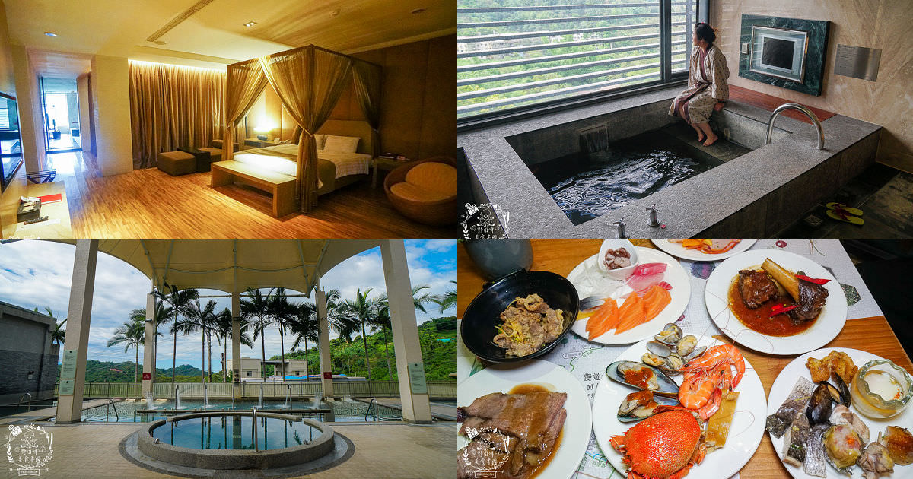

大坑風景區位於台中市北屯區，被譽為『台中陽明山』。於民國65年經台中市政府開發成立，佔地面積達3300公頃，海拔範圍自112公尺至860公尺，被譽為台中的後花園。921大地震後，車籠埔斷層穿越大坑，引起地層劇烈變動，專家發現了這裡的溫泉資源，為大坑風景區帶來新的觀光價值。

大坑風景區以其自然生態、溫泉泡湯和便捷的交通而聞名，曾被選為台中前十大熱門旅遊景點，成為遊客不可錯過的勝地。此區也是台中市民休閒踏青的首選，同時吸引眾多登山愛好者。其廣闊的占地面積，更為特色的是，遊客無需門票即可盡情享受自然芬多精的洗禮。
完成一場健行登山後，遊客可前往大坑風景區著名的小吃店，如豬頭三的店、東東芋圓等，品嚐美食甜點，輕鬆完成一個愉快的上午行程。大坑風景區的獨特之處在於融合了自然美景、豐富的生態環境、溫泉體驗，為遊客提供了多元且豐富的旅遊體驗。